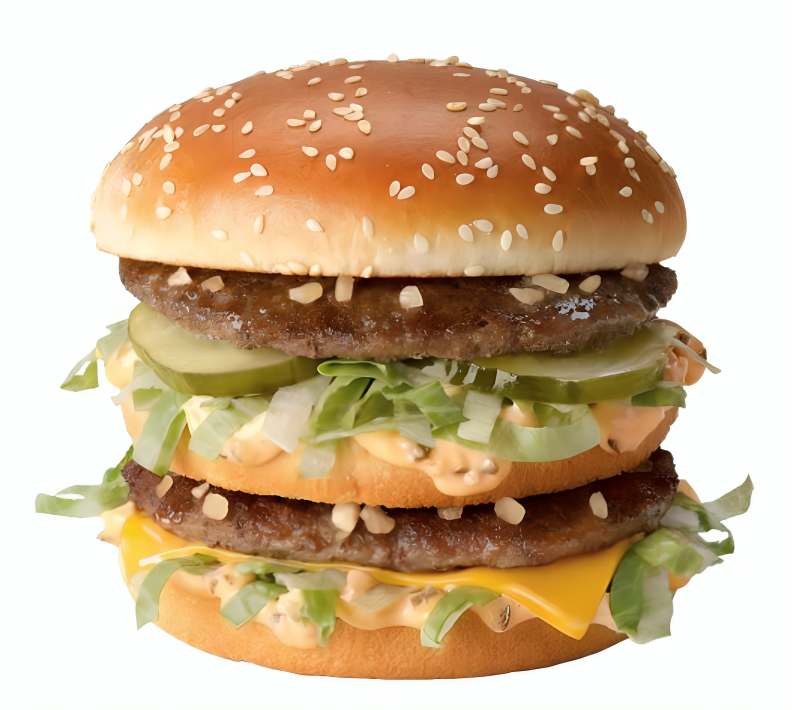
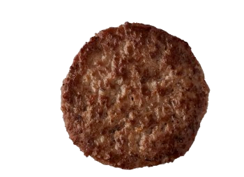
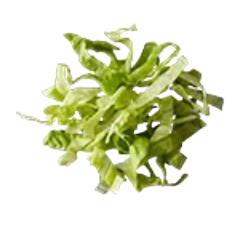
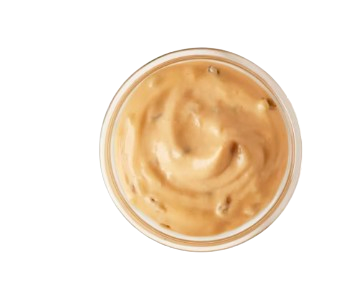
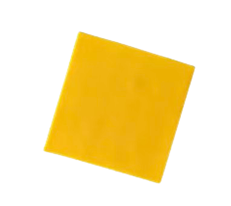
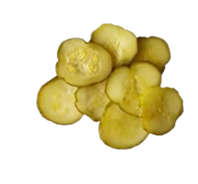

For a long time, I could not uncover the secrets of the titans moving around us. They were nothing like us and could do many things we couldn’t. Every few seconds, a titan would eat one of us. To us, it felt like they did it just for bloodlust. Researchers have examined them and concluded that they do not need food to survive. My life was short and I had always wanted to see the outside world beyond the walls which confined me. Big Macs have tried, but everything is based on luck. Some Big Macs are brought outside, while others spend their whole lives inside the walls. No one knows what happens to the Big Macs that are taken, but death is certain.
When I was 11 minutes old, a titan approached me and picked me up, holding me in its hands. I knew it was the end of my life. I recalled every memory and how peaceful it was. However, just as I was about to die, I felt a surge of energy run through me. My structure broke apart, layers separated, stretched, and reformed. When I looked again, I saw a titan standing where I once was. I had become a titan.
Suddenly, I could move, and a flood of memories overwhelmed me. I understood everything. I was part of the royal family, and my father was also a titan who had passed me this power. The reason I could not remember those things was because my father had removed part of my memory — my lettuce — from me. Now that I am about to die, I have regained those memories. The titan that tried to kill me was now flattened beneath me. I finally had a name — Case Oh.
"Someone who can't sacrifice anything, can't ever change anything" - Armin Arlert
The World

Brain

Bones

Spinal Fluid

Blood

Organs
Saturated Fat: 11g
Trans Fat: 1g
Cholesterol: 85mg
Dietary Fiber: 3g
Total Sugars: 7g
Added Sugars: 5g
Vitamin D: 0%
Calcium: 10%
Iron: 25%
Potassium: 8%
Sodium: 46%
The World
Ingredients: The walls that trap us and the sky we were never meant to reach.
Brain
Ingredients: The truth that arrives too late.
Bones
Ingredients: The structure that keeps us standing until it doesn’t.
Spinal Fluid
Ingredients: The power that changes everything.
Blood
Ingredients: The price of inheritance.
Organs
Ingredients: Everything inside us that proves we were alive before we were eaten.